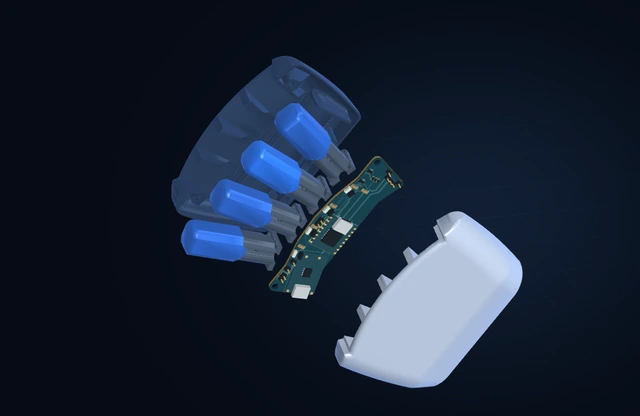
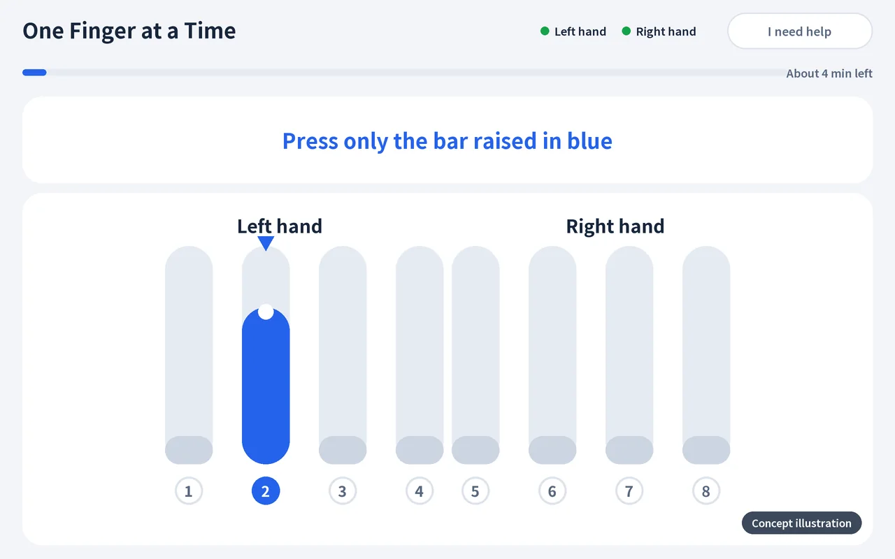

Rhythm Touch
20 secMove your arm as a block approaches. Squeeze to light the blade on that side. Open your hand to switch it off.
Planned for launch
Rehaptic is a digital training device that links a hand-operated grip with app content and records finger-by-finger training under seven areas: reaction, separation, control, sustain, beat, sequence and coordination.
Grip

Drag horizontallyBased on mechanical and PCB design files. Placement and travel are illustrated.
Open the grip videoEach lever has its own spring resistance. Pull out the whole lever and fit one with the resistance you want.
The app’s grip check shows the sensor distance in millimeters and the calibrated press depth as a percentage for each finger.
Lights, sound and the screen show which finger to use. The grip vibrates when the lever is fully pressed.
The independent finger input and haptic structure is the subject of three domestic patent applications (pending, not yet granted).
Activities
Explore each activity to see the app in action and how to use the grips.

Press the lever that matches the lit number and hold it for the time shown. Sustain · Separation · Coordination

Press the matching lever as each note reaches its ring. Beat · Coordination · Sustain

Watch the numbers, then press the matching levers in the same order. Sequence · Separation

When a mole pops up, press the matching lever to catch it. Reaction · Separation

Squeeze the whole left hand to steer the hot-air balloon left and the whole right hand to steer it right, dodging the dark clouds. Coordination · Sustain

Gently press the lit lever while keeping your other fingers at rest. Separation · Control

Press the lever to raise the water level. Hold it steady when it reaches the yellow band. Control · Sustain

Listen to the whole rhythm, then tap it back on your turn. Beat
Explore four game concepts for the next-generation grips. Watch how each game responds as you squeeze and move your arms.
Move your arm as a block approaches. Squeeze to light the blade on that side. Open your hand to switch it off.
Take turns with your left and right hands. Squeeze at one star, trace a line to the next, then release.
Tilt both grips to steer the paper plane. The gate stays closed with one grip held. Squeeze both together to open it.
Raise and lower each hand to change the pitch of its note. The ribbons join and the chord sounds only while both grips are held.
These four films illustrate concepts in development. Activities and launch plans may change. What each area means and which values are recorded are on the technology page. We make no claims of efficacy or therapeutic effect.
Setups


These illustrations show example setups. The tablet shows the app in development. The phone shows a proposed layout for the same activities.